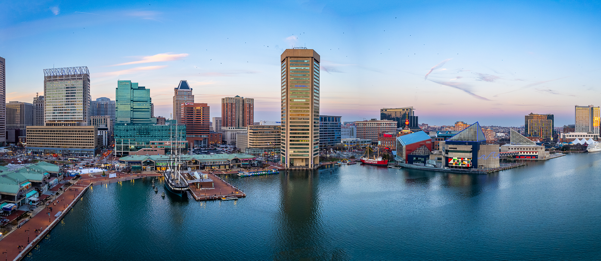
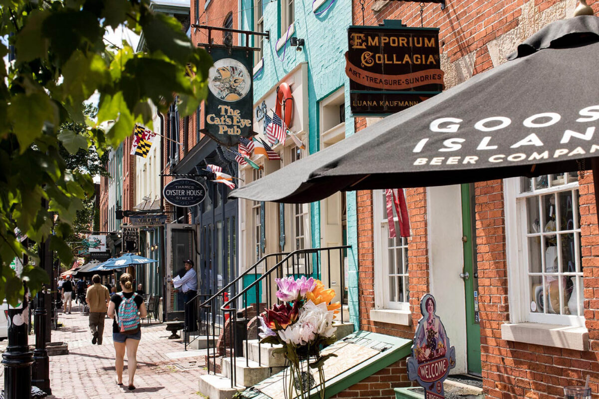

Baltimore City's Inner Harbor – A Vibrant Waterfront Hub of Museums, Marinas, and City Life
Baltimore City at a Glance
Baltimore is the largest city in Maryland and a place that mixes history, culture, and a strong waterfront identity (Maryland Cities by Population 2025, 2025). The city sits along the Patapsco River and opens into the Chesapeake Bay, which is why the Inner Harbor has become one of its most popular areas for restaurants, museums, and local businesses.
Baltimore is known as Charm City, a nickname that came from a 1970s advertising campaign that promoted the city's friendly neighborhoods and unique character (John, 2024). The name stayed because it reflects the personality of the people who live here and the pride they have in their city.
The weather changes a lot through the year. Summers are warm and humid, spring and fall are mild, and winters can be cold but usually manageable. These shifts make the city feel different each season, especially around the harbor.
Sports are a big part of life in Baltimore. The Baltimore Orioles play at Camden Yards, and the Baltimore Ravens bring football fans together at M&T Bank Stadium. Both teams add a lot of energy to the city.
Getting to Baltimore is simple. Interstate 95 runs right through the area, and Baltimore Washington International Airport is close by. Trains and buses also connect the city to Washington D.C. and other major East Coast destinations.
People visit Baltimore for the waterfront, the food, the museums, and the neighborhoods that give the city its charm. It is a place that continues to grow while still holding onto the character that makes it memorable.

Brick-lined streets and vibrant storefronts in Baltimore City's iconic Fells Point neighborhood
Baltimore City Profile:
- Population: 568,271
- Year incorporated: 1851
- Region of Maryland where it is located: North-Central Maryland (Only city in Maryland not located within a county)
- Classification: Urban
- Average salary compared to the rest of Maryland: $72,288 ($1,344 lower than the Maryland average salary of $73,632)